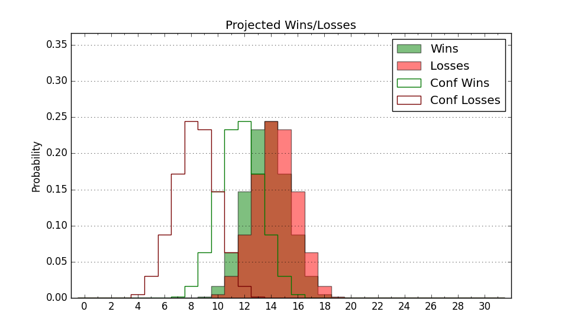

| Home | Game Probabilities | Conferences | Preseason Predictions | Odds Charts | NCAA Tournament |
| City: | Beaumont, Texas | |
| Conference: | Southland (2nd)
| |
| Record: | 7-3 (Conf) 9-9 (Overall) | |
| Ratings: | Comp.: -4.6 (213th) Net: -4.1 (211th) Off: 100.4 (256th) Def: 104.5 (147th) SoR: 0.0 (144th) |
| Remaining | ||||||
|---|---|---|---|---|---|---|
| Date | Opponent | Win Prob | Pred. | |||
| 2/1 | @ Stephen F. Austin (234) | 40.2% | L 60-62 | |||
| 2/3 | @ Southeastern Louisiana (207) | 33.7% | L 64-68 | |||
| 2/8 | UT Rio Grande Valley (236) | 69.8% | W 75-69 | |||
| 2/10 | Tex A&M Corpus Chris (148) | 50.2% | W 71-70 | |||
| 2/15 | @ Texas A&M Commerce (333) | 66.0% | W 69-64 | |||
| 2/17 | @ Northwestern St. (233) | 40.0% | L 63-66 | |||
| 2/22 | @ Houston Baptist (259) | 45.4% | L 66-67 | |||
| 2/24 | @ Incarnate Word (265) | 47.8% | L 69-70 | |||
| 3/1 | McNeese St. (58) | 19.3% | L 62-72 | |||
| 3/3 | Nicholls St. (174) | 57.0% | W 71-69 | |||
| Previous | Game Score | |||||
| Date | Opponent | Win Prob | Result | Off | Def | Net |
| 11/11 | @Texas A&M (17) | 2.5% | L 71-97 | 17.6 | -17.0 | 0.6 |
| 11/17 | Sam Houston St. (175) | 57.0% | L 72-85 | -9.7 | -22.1 | -31.8 |
| 11/22 | @Akron (116) | 18.0% | L 72-79 | -1.4 | 6.4 | 5.0 |
| 11/23 | (N) Alabama St. (311) | 71.9% | L 75-77 | 1.7 | -7.4 | -5.7 |
| 11/24 | (N) Nebraska Omaha (198) | 45.7% | L 59-65 | -15.9 | 7.3 | -8.6 |
| 12/5 | @Tex A&M Corpus Chris (148) | 22.9% | W 65-61 | -1.3 | 18.4 | 17.1 |
| 12/7 | @UT Rio Grande Valley (236) | 40.4% | W 84-52 | 21.8 | 28.9 | 50.7 |
| 12/14 | @Louisiana Lafayette (341) | 68.9% | W 74-45 | 11.8 | 30.0 | 41.8 |
| 12/17 | @Southern Miss (268) | 48.3% | W 69-65 | 0.0 | 1.3 | 1.3 |
| 12/21 | @Texas Tech (14) | 2.0% | L 57-101 | -3.6 | -23.2 | -26.9 |
| 1/4 | Houston Baptist (259) | 73.9% | W 63-61 | -11.4 | 5.6 | -5.8 |
| 1/6 | Incarnate Word (265) | 75.7% | W 72-58 | -0.8 | 8.4 | 7.6 |
| 1/11 | Stephen F. Austin (234) | 69.6% | L 63-72 | -0.8 | -25.1 | -26.0 |
| 1/13 | New Orleans (331) | 86.5% | L 62-68 | -16.1 | -12.6 | -28.7 |
| 1/18 | @McNeese St. (58) | 6.6% | L 64-75 | 13.2 | 2.4 | 15.6 |
| 1/20 | @Nicholls St. (174) | 28.0% | W 78-74 | 10.5 | 0.0 | 10.5 |
| 1/25 | Texas A&M Commerce (333) | 86.9% | W 61-58 | -21.9 | 8.5 | -13.4 |
| 1/27 | Northwestern St. (233) | 69.4% | W 69-59 | 7.0 | 2.5 | 9.5 |
| Stats & Trends | |||||
|---|---|---|---|---|---|
| Current | Day | Week | Month | Season | |
| Composite | -4.6 | +0.0 | -0.0 | +0.2 | +6.5 |
| Comp Rank | 213 | +2 | +3 | -3 | +68 |
| Net Efficiency | -4.1 | +0.0 | -0.3 | -1.6 | -- |
| Net Rank | 211 | +2 | -4 | -29 | -- |
| Off Efficiency | 100.4 | -0.0 | -0.8 | -0.2 | -- |
| Off Rank | 256 | -2 | -14 | -9 | -- |
| Def Efficiency | 104.5 | +0.0 | +0.5 | -1.4 | -- |
| Def Rank | 147 | -1 | +16 | -13 | -- |
| SoS Rank | 245 | +1 | -50 | -125 | -- |
| Exp. Wins | 13.7 | -0.0 | +0.3 | -0.4 | +1.9 |
| Exp. Conf Wins | 11.7 | -0.0 | +0.3 | -0.4 | +2.1 |
| Conf Champ Prob | 0.1 | +0.0 | -0.1 | -7.7 | -2.0 |

| Advanced Stats | ||
|---|---|---|
| Stat | Value | Rank |
| Off Eff FG % | 0.462 | 319 |
| Off Ast Ratio | 0.148 | 159 |
| Off ORB% | 0.333 | 67 |
| Off TO Rate | 0.145 | 147 |
| Off FT Ratio | 0.265 | 341 |
| Def Eff FG % | 0.489 | 117 |
| Def Ast Ratio | 0.152 | 227 |
| Def ORB% | 0.309 | 256 |
| Def TO Rate | 0.147 | 189 |
| Def FT Ratio | 0.381 | 285 |